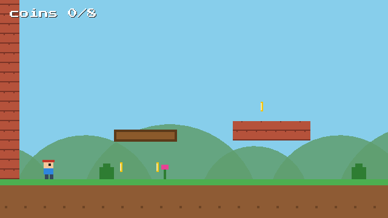
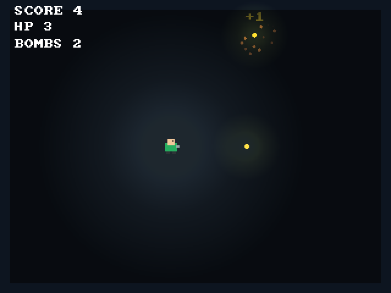
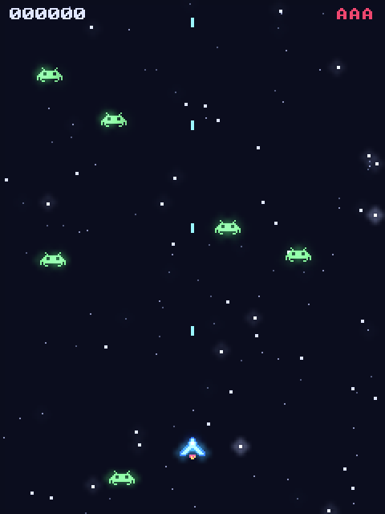
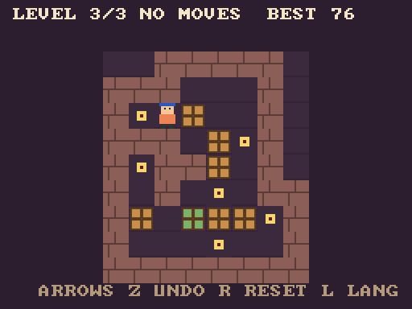
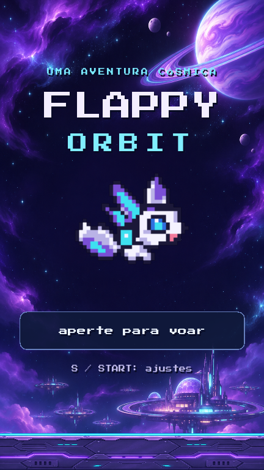

Code with a clear contract.
TypeScript checks your scenes, actions, tags and assets. Catch a misspelled name before it becomes a broken game.
Explore the APIAn open-source 2D game engine
For the games in your head.
A native engine and a typed API for AI agents and the people building with them.

Small surface.
Solid foundations.
Made for the way you build
Keep the creative loop close: write, run, inspect, repeat. A small, predictable API gives you and your agent the same clear starting point.
TypeScript checks your scenes, actions, tags and assets. Catch a misspelled name before it becomes a broken game.
Explore the APIThrough MCP, an agent can build, run and inspect the game. Hot reload keeps the feedback loop moving.
Meet the agent workflowA fixed step, seeded randomness and headless tests let you check game behavior with repeatable inputs.
See how testing worksBuilt with alpha-star
Five small, complete games. Real screenshots from the running engine. Read the code, learn a pattern, make it yours.
Platformer
Sprite animation, Tiled maps, camera follow and Box2D physics.
Explore source
Co-op / ParticlesTop-down arena
Two players, auto-aim, sensor bullets and particle blasts.
Explore source
Collision / LayersSpace shooter
Fast shots, collision categories and a scrolling star field.
Explore source
Saves / Game UISokoban puzzle
Pure game rules, undo, saved progress and accessible UI.
Explore source
Audio / LocalizationFlappy
Scenes, music, settings, localization and a best score to beat.
Explore sourceFrom terminal to playtime
Pick a template. Install its dependencies. Run the tests, then take the controls.
Read the getting started guidenpx @alpha-star/sdk init my-game --template platformer
cd my-game
npm install
npm test
npm startOther templates: blank · topdown · puzzle · shmup

Give it somewhere to run.